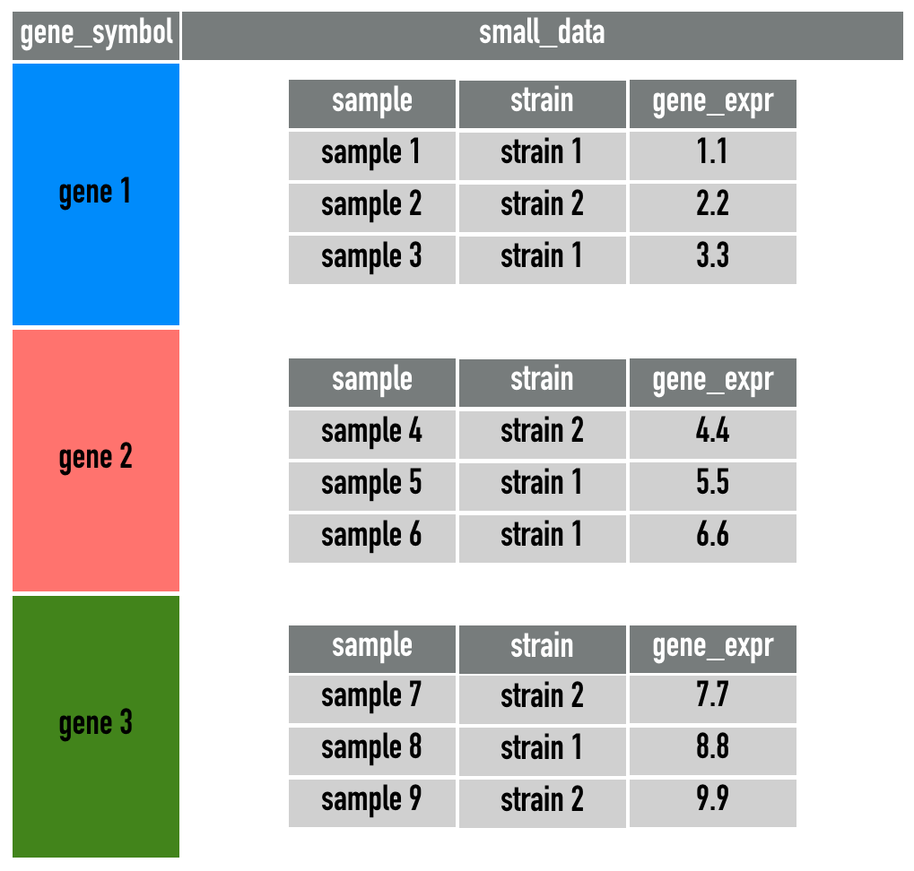
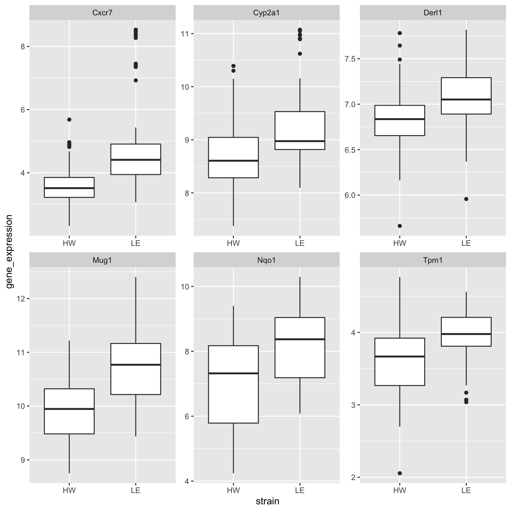
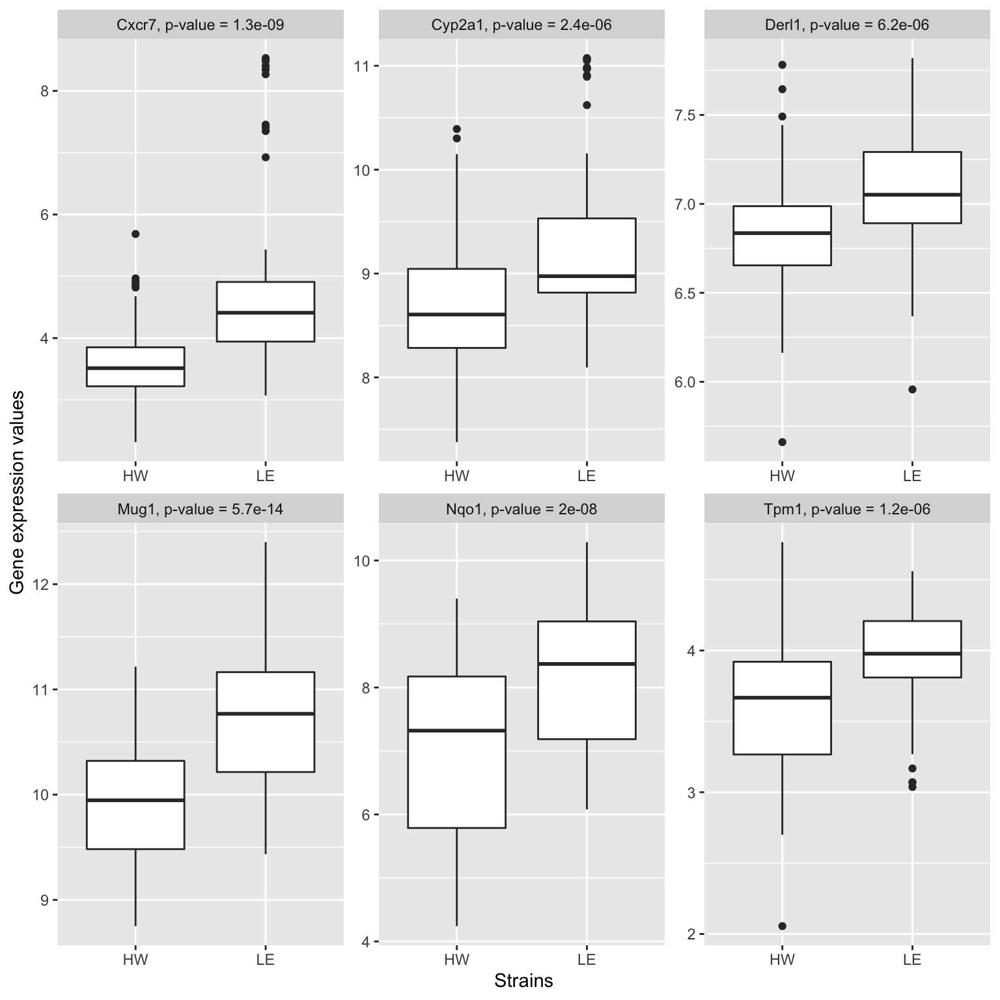

session3
Kevin Wang and Garth Tarr
05/11/2019
1 Learning outcomes of this session
- Compute differential expression p-values using the
broomandpurrrpackages - Make a boxplot of gene expression values with
ggplot2
3 A quick word about tibble
Most of the time, you can think of a tibble as being identical to a data.frame. In fact, in Session 1 and 2, even though we keep referring to the data as data.frame, but they are actually tibbles. A tibble is the default alternative to data.frame in the tidyverse.
The reason that tibble is so useful is that it allows for list objects as columns. This will come in very handy when performing modelling tasks. Have a look at the picture below:

Suppose that we want to perform modelling within each Species of three different iris flowers, it would be much better to utilise this new structure of representation of data in the middle and apply the modelling for each element of the Measurements column. This is indeed what we will try to achieve in this session.
4 Loading cleaned sample data
The session3_data.csv data is almost identical to the wide_sample_ge_data.csv file that we just saved in Session 2. Except that we actually used all 54 genes when reading in the downloaded data. We will take the logarithm of all the gene expression values for convenience.
5 Performing a t-tests
A typical task in bioinformatics is to perform differential gene expression analysis. That is, we want to identify genes that has a different expression levels between two conditions. While there are many ways that this can be done, we will opt for the simplest approach of using a t-test.
In R, t-test can be performed using the t.test function. Below, we will perform a t-test on the Ahrrr gene between the two strains of mice. (Note: statistically speaking, this test is a bad idea due to the existence of different dose and time could creating confounding. However, since statistics is not the focus of this workshop so we will ignore this fact for now.)
The output of the t.test function can be a bit hard to read or manipulate into a data.frame. This is where the tidy() function from the broom package can help.
Similarly, we can do the same for the Cxcr7 gene.
In the clean_data, we have 54 genes in total. If we want to perform t-test on each gene, should we type out 54 lines of code? The answer is no! This is not the most efficient way to utilise your time and there are fast ways to achieve the same outcome. However, we may need to take a quite diversion to understand loops and iterations.
6 for loops
for loops are common in any programming language. It simply list out the instructions and the iterations are specified using an index. For example, the following code prints out 1 to 5.
We can use the for loop to go through each column in clean_data, calculate the t-test statistics and print them out. However, this output is often not plotting-friendly because we need to merge this output with the original gene expression values before any plotting can be done. We can use a tidyverse framework to achieve the same thing.
7 Nesting data
Now, let’s think about the task of calculating a t-test for each gene. This may seem like a very difficult task, but we can identify its components to achieve simplifications and generalisations.
First, we should run the t.test and the broom::tidy function on gene expression values for a selected gene. Then, we do exactly the same operation for another 53 genes. So the grand overall task is actually very repetitive and we are really just applying the following function to 54 datasets, where each dataset only contains one selected gene.
tidy_test = function(this_data){
t.test(gene_expression ~ strain, data = this_data) %>%
broom::tidy()
}So now, our very difficult task of performing 54 t-tests is simplified to spliting clean_data into 54 datasets, one for each gene.
While there are many ways this can be done in R, we will use a tidyverse framework that has the advantage of readable codes and generalisability.
First, let’s pivot our data into a long format.
gene_long = clean_data %>%
tidyr::pivot_longer(
cols = -c("strain", "sample"),
names_to = "gene_symbol",
values_to = "gene_expression")
gene_longA simplification of gene_long is this diagram:

Then we will use the group_by function and then apply the nest function from the tidyr package.
gene_nest = gene_long %>%
group_by(gene_symbol) %>%
tidyr::nest(.key = "small_data") %>%
dplyr::ungroup()
gene_nest
gene_nest$small_data[1:2]So, a lot of things happened here. Let’s explain.
You might remember the group_by function when we were trying to use the summarise function to calculate summary statistics in Session 1. This is exactly what we achieved with gene_nest, since the gene_long data with 8,316 rows is summarised into a smaller data.frame with 54 rows. The idea is that any reduction of number of rows can considered to be a summary of the long data.
In gene_nest, each gene only has “one row”, but in the small_data column, each row of elment in the small_data column is a data.frame of size 154 rows and 3 columns (indicated by the [154 x 3]). The reason that we have 154 observations is because we have 154 samples (number rows of clean_data) to begin with. The reason that we have 3 columns is because these are all the columns that we didn’t put into group_by.
So why are we doing this complicated structure? This is because our original aim is to split the gene_long data into 54 smaller data, and we have in fact achived that here with the small_data column.
A simplification of small_data is this diagram:

Now, we simply need to apply the tidy_test function onto the small_data column in this gene_nest data.frame. Again, we could do that with a for loop, but the same difficult issue of visualisation still applies.
8 map function in purrr
The map function from the purrr package is a tremendously powerful function. In simply terms, it allows us to write a for loop is a very simple and readable way.
Why is this code better than the for loop even though they achieved the same output? The biggest reason is that we don’t have to read and understand individual lines inside the for loop. We simply need to know:
.x, the input.f, the function
Then the function .f will be applied onto every element of the .x input.
Another reason why the map function is superior to a for loop is how easy it can work with the mutate function in dplyr. The following code can be read as:
- In the
gene_nestdata, we want tomutate(create) a new column - This new column will be called
tidy_resultand it is defined as mapping thetidy_testfunction to every element if thesmall_datacolumn.
gene_test = gene_nest %>%
dplyr::mutate(
tidy_result = purrr::map(
.x = small_data,
.f = tidy_test)
)
gene_testA simplification of gene_test is this diagram:

This is a very powerful framework, because it allows us to create new statistics horizonally inside a data.frame, keeping track of the matching genes/observations. You may not experience this yourself, but one of the most common mistake in data analysis is the mis-matching of rows when combining datasets and statistics. The use of the mutate and map functions allows all intermediate steps to be stored as a column inside a data.frame, preventing any mis-matchings.
9 Plotting t-test results
The tidy_result column in gene_test is now a list of tibbles (think of them as data.frames). Each of these tibbles contains t-test statistic and p-value associated with each gene.
We will now need to expand this column. The function we will use is unnest from the tidyr package. As you may already guessed, this function undoes the nest operation. In this case, we want to undo the tidy_result column only.
Armed with all the t-test statistics and p-values, we may want to perform some quick visualisations.
This histogram shows that we actually have about 1/3 of genes significantly differentially expressed (DE) between the two strains. This is usually a problem with gene expression analysis because if all t-test assumptions are met, the p-values should be uniformly distributed over the [0,1] interval. This inflation is could be attributed to normalisation issues with the data since we have only taken the most naive approach of taking the logarithm. Additionally, we should also note that this is a targeted gene expression data where genes are typically selected due to differential patterns they showed in pilot studies. We will not commenton the biological implication of this histogram further, but proceed with another common analysis, which is to create boxplots of the top differentially expressed genes.
9.1 Boxplots of top differentially expressed genes
In this section, we will first extract the top 6 DE genes and make a boxplot for each of them between the two strains.
The following code allows us to subset the data.frame to the 6 genes with smallest p-values (i.e. most differentially expressed). However, we shouldn’t forget that all the gene expression values are still stored in the small_data column. We need to apply the unnest operation to extract these values.
gene_test_long %>%
dplyr::filter(rank(p.value) <= 6)
boxplot_data = gene_test_long %>%
dplyr::filter(rank(p.value) <= 6) %>%
tidyr::unnest(small_data)
boxplot_dataAnd now, let’s perform the final plotting!
boxplot_data %>%
ggplot(aes(x = strain,
y = gene_expression)) +
geom_boxplot() +
facet_wrap(~ gene_symbol, scales = "free")
We can also prettify the plots by creating a label column in the data, which combines the gene symbols and p-values.
boxplot_data %>%
dplyr::mutate(label = paste0(
gene_symbol, ", p-value = ", signif(p.value, 2))) %>%
ggplot(aes(x = strain,
y = gene_expression)) +
geom_boxplot() +
facet_wrap(~ label, scales = "free") +
labs(x = "Strains",
y = "Gene expression values")
Alternatively, the ggpubr package also offers some default graphics that are similar to ggplot2, though with a different syntax.
ggboxplot(
data = boxplot_data,
x = "strain",
y = "gene_expression",
facet.by = "gene_symbol",
scales = "free") +
ggpubr::stat_compare_means()
10 References
Wickham et al., (2019). Welcome to the tidyverse. Journal of Open Source Software, 4(43), 1686, https://doi.org/10.21105/joss.01686
11 Session Info
## R version 3.6.1 (2019-07-05)
## Platform: x86_64-apple-darwin15.6.0 (64-bit)
## Running under: macOS Mojave 10.14.6
##
## Matrix products: default
## BLAS: /Library/Frameworks/R.framework/Versions/3.6/Resources/lib/libRblas.0.dylib
## LAPACK: /Library/Frameworks/R.framework/Versions/3.6/Resources/lib/libRlapack.dylib
##
## locale:
## [1] en_AU.UTF-8/en_AU.UTF-8/en_AU.UTF-8/C/en_AU.UTF-8/en_AU.UTF-8
##
## attached base packages:
## [1] stats graphics grDevices utils datasets methods base
##
## other attached packages:
## [1] ggpubr_0.2.4 magrittr_1.5 visdat_0.5.3 readxl_1.3.1
## [5] janitor_1.2.0 forcats_0.4.0 stringr_1.4.0 dplyr_0.8.3
## [9] purrr_0.3.3 readr_1.3.1 tidyr_1.0.0 tibble_2.1.3
## [13] ggplot2_3.2.1 tidyverse_1.3.0
##
## loaded via a namespace (and not attached):
## [1] tidyselect_0.2.5 xfun_0.11 haven_2.2.0 lattice_0.20-38
## [5] snakecase_0.11.0 colorspace_1.4-1 vctrs_0.2.0 generics_0.0.2
## [9] htmltools_0.4.0 yaml_2.2.0 utf8_1.1.4 rlang_0.4.2
## [13] pillar_1.4.2 withr_2.1.2 glue_1.3.1 DBI_1.0.0
## [17] dbplyr_1.4.2 modelr_0.1.5 lifecycle_0.1.0 ggsignif_0.6.0
## [21] munsell_0.5.0 gtable_0.3.0 cellranger_1.1.0 rvest_0.3.5
## [25] evaluate_0.14 labeling_0.3 knitr_1.26 fansi_0.4.0
## [29] broom_0.5.2 Rcpp_1.0.3 backports_1.1.5 scales_1.1.0
## [33] jsonlite_1.6 farver_2.0.1 fs_1.3.1 hms_0.5.2
## [37] digest_0.6.23 stringi_1.4.3 grid_3.6.1 cli_1.1.0
## [41] tools_3.6.1 lazyeval_0.2.2 crayon_1.3.4 pkgconfig_2.0.3
## [45] zeallot_0.1.0 ellipsis_0.3.0 xml2_1.2.2 reprex_0.3.0
## [49] lubridate_1.7.4 assertthat_0.2.1 rmarkdown_1.18 httr_1.4.1
## [53] rstudioapi_0.10 R6_2.4.1 icon_0.1.0 nlme_3.1-142
## [57] compiler_3.6.1